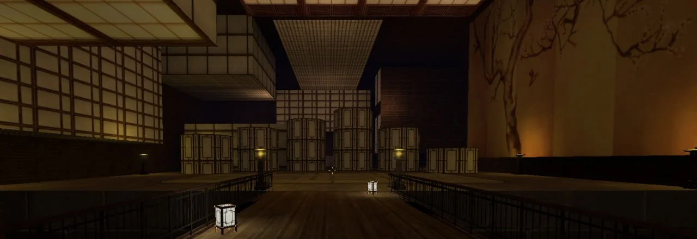
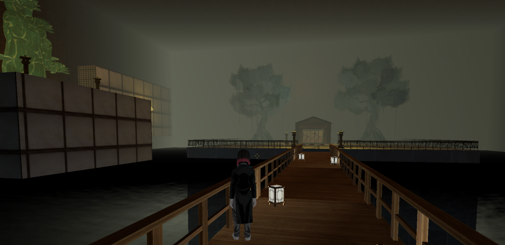
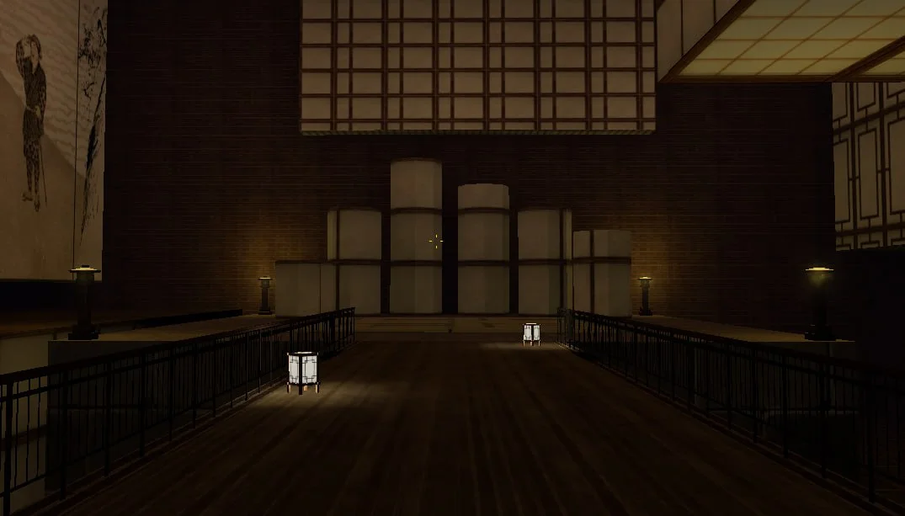

«Я — живое существо, бесконечно близкое к совершенству.»— Мудзан Кибуцуджи · Прародитель демонов«Будь благодарен за кровь. Не пролей на землю ни капли — иначе голова и тело расстанутся.»— Кокушибо · Первая Высшая Луна«Я люблю людей. Всё, чего я хочу, — быть рядом с ними.»— Доума · Вторая Высшая Луна«Стань демоном, Кёджуро. Мы сможем сражаться вечно.»— Аказа · Третья Высшая Луна«Мы не брат и сестра. Мы — одна Шестая Высшая Луна.»— Гютаро · Шестая Высшая Луна«Тот, кто красивее меня, не заслуживает жить.»— Даки · Шестая Высшая Луна«Почему я? Почему Прародитель выбрал именно меня?»— Энму · Первая Низшая Луна«Семья должна быть вместе. Семейные узы — это всё.»— Руи · Пятая Низшая Луна
«Я — живое существо, бесконечно близкое к совершенству.»— Мудзан Кибуцуджи · Прародитель демонов«Будь благодарен за кровь. Не пролей на землю ни капли — иначе голова и тело расстанутся.»— Кокушибо · Первая Высшая Луна«Я люблю людей. Всё, чего я хочу, — быть рядом с ними.»— Доума · Вторая Высшая Луна«Стань демоном, Кёджуро. Мы сможем сражаться вечно.»— Аказа · Третья Высшая Луна«Мы не брат и сестра. Мы — одна Шестая Высшая Луна.»— Гютаро · Шестая Высшая Луна«Тот, кто красивее меня, не заслуживает жить.»— Даки · Шестая Высшая Луна«Почему я? Почему Прародитель выбрал именно меня?»— Энму · Первая Низшая Луна«Семья должна быть вместе. Семейные узы — это всё.»— Руи · Пятая Низшая Луна
Отрядные помещения
У каждого отряда имеется свой дом/комната, свободно посещать их можно только членам отряда и демонам 12-ти лун.
Зал Мудзана
Можно заходить только Мудзану
Исключение: Созыв, Кокушибо
Дополнение: Запрещено стучать и открывать двери в зал
Зал высших лун
Можно заходить только высшим лунам и Прародителю
Исключение: Вас вызвали / построение

Зал Доумы
Можно заходить только высшим лунам и Прародителю
Исключение: Вас вызвали / построение

Зал низших лун
Можно заходить низшим лунам и выше
Исключение: Вас вызвали / построение

Гора Натагумо
Можно заходить с разрешения членов семьи и выше
Исключение: Прародитель, нынешний состав высших демонов дюжины
Поместье Кото
Можно заходить с разрешения членов отряда и выше (в зону для покупателей можно заходить без разрешения только при условии, что поместье Кото открыто)
Исключение: Прародитель, нынешний состав высших демонов дюжины
Храм Доумы
Можно заходить с разрешения членов отряда и выше
Исключение: Прародитель, нынешний состав высших демонов дюжины
Отрядные помещения
Можно заходить с разрешения членов отряда комнаты и выше